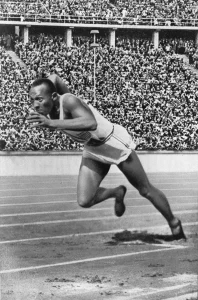

Jesse Owens Berlin Olimpiyatları’nda Adolf Hitler Tarafından Reddedildi mi?
1933 yılının başlarında Adolf Hitler fiilen Almanya’nın diktatörü haline gelmişti. Nazi olmayan tüm partiler, örgütler ve işçi sendikalarının varlığı sona ermişti. Pan-Cermen yayılmacılığı ve antisemitizmin karşılıklı ideolojileri kök salmıştı. “Ari olmayan” (beyaz ve Yahudi olmayan) ırkların üyeleri aşağı ve dejenere olarak algılanıyor ve tasvir ediliyordu. Nazi spor imgeleri Aryan ırksal üstünlüğü mitini desteklemeye hizmet etmiştir. Sözde Aryan yüz özellikleri -sarı saçlar ve mavi gözler- posterlerde ve dergi illüstrasyonlarında vurgulanmıştır. Nisan 1933’te Nazilerin spor ofisi tüm kamu spor kuruluşlarına “sadece Aryanlara özel” bir politika uygulamalarını emretti. Bu politika küresel bir öfkeye yol açtı: Sadece iki yıl önce Uluslararası Olimpiyat Komitesi (IOC) 1936 Yaz Olimpiyatlarını Berlin’e vermişti ve şimdi Amerika Birleşik Devletleri ve Avrupa’daki Olimpiyat organizatörleri Berlin Olimpiyatlarından tamamen çekilmeyi düşünüyordu. 
{kind=link}
1934 yılında Birleşik Devletler Olimpiyat Komitesi Başkanı Avery Brundage, Almanların Yahudi sporculara zulmettiğine dair haberlere Alman spor tesislerini denetleyerek yanıt verdi. Brundage, Yahudi atletlere adil davranıldığını tespit etti ve daha sonra Amerikalı atletlerin Berlin’e gönderilmesinden yana olduğunu açıkladı. Aralık 1935’te ABD’yi uluslararası spor federasyonlarında temsil eden Amatör Atletizm Birliği, ABD’nin katılımını az bir oy farkıyla onayladı. Diğer ülkelerdeki olimpiyat organizasyonları da bunu takip etti.
Berlin Olimpiyatları resmi olarak 1 Ağustos 1936’da açıldı. On sekiz Afro-Amerikan atlet yarıştı. Jesse Owens her ırktan en başarılı atletti. 22 yaşındaki Owens, 3 Ağustos ile 9 Ağustos tarihleri arasında uzun atlama, 100 ve 200 metre koşu ve 4 x 100 metre bayrak yarışında altın madalya kazandı. Tek bir Olimpiyat Oyununda dört altın madalya kazanan ilk Amerikalı atletizm sporcusu oldu. Olimpiyatlar sona erdikten sonra, Owens’ın Hitler tarafından “küçümsendiğini” iddia eden hikayeler geniş çapta yayıldı. Hikayenin en yaygın varyantına göre, Owens ilk madalyasını kazandıktan sonra, Ari olmayan bir sporcunun yeteneğini kabul etmek istemeyen Hitler stadyumu terk etti. Owens’ın kendisi başlangıçta bunun doğru olmadığında ısrar etse de (daha sonra doğru olduğunu iddia etti), haber dünyanın dört bir yanındaki gazetelerde yer aldı.
Hitler’in Owens ile tokalaşmadığı doğrudur. Aslında, 2 Ağustos 1936’da yarışmanın ilk gününden sonra hiçbir altın madalya kazanan sporcuyu tebrik etmedi. İlk gün Hitler tüm Alman altın madalya sahipleriyle tanıştı ve el sıkıştı. (Ayrıca birkaç Finli atletle de tokalaştı.) O gece Hitler, Afro-Amerikan yüksek atlamacı Cornelius Johnson ilk altın madalyasını kazanmadan önce stadyumdan ayrıldı; Hitler’in kurmayları onun önceden planlanmış bir randevusu olduğunu iddia etti. Hitler azarlandı ve IOC Başkanı Henri de Baillet-Latour ona ya tüm altın madalya kazananları kutlayacağını ya da hiçbirini kutlamayacağını söyledi. Hitler hiç kimseyi onurlandırmamayı seçti.
Ertesi gün -3 Ağustos 1936- Owens 100 metre koşuda ilk altın madalyasını kazandı. Hitler Owens ile karşılaşmadı ya da el sıkışmadı. Bununla birlikte, bir selam ya da el salladığına dair birkaç rapor vardır. Berlin’den yazan spor muhabiri ve yazar Paul Gallico’ya göre, Owens “şeref locasının altına götürüldü, orada gülümsedi ve eğildi ve Bay Hitler ona dostça küçük bir Nazi selamı verdi, oturarak ve kolunu bükerek.” Owens’ın kendisi de daha sonra bunu doğrulamış ve birbirlerini tebrik ettiklerini söylemiştir.
Yani Owens Hitler tarafından kişisel olarak küçümsenmemişti. Ancak Owens birileri tarafından küçümsendiğini hissetmiştir: ABD Başkanı Franklin D. Roosevelt. Olimpiyat Oyunlarından bir ay sonra Owens bir kalabalığa şöyle dedi: “Hitler beni küçümsemedi, beni küçümseyen [Roosevelt] idi. Başkan bana bir telgraf bile göndermedi.” Roosevelt, Owens’ın başarılarını ya da Berlin Olimpiyatlarında yarışan 18 Afrikalı Amerikalının başarılarını hiçbir zaman kamuoyu önünde kabul etmedi. 1936’da Beyaz Saray’a sadece beyaz Olimpiyatçılar davet edilmişti. Başkan’ın bu davranışına bir dizi açıklama getirilmiştir. Büyük olasılıkla Roosevelt ırk konusunda aşırı yumuşak görünerek Güneyli Demokratların desteğini kaybetme riskini almak istememiştir. Berlin’de yarışan Siyah Olimpiyatçılar, Başkan Barack Obama’nın sporcuların yakınlarını hayatlarını ve başarılarını kutlamak üzere bir etkinliğe davet ettiği 2016 yılına kadar Beyaz Saray tarafından tanınmadı.